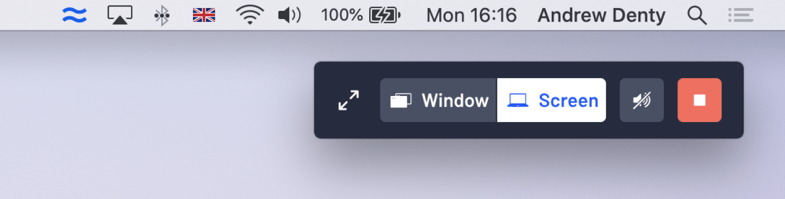

Airtame is a device that lets people present wirelessly to a screen or projector. The Airtame desktop app lets people control screen sharing from their computer.
I currently lead the design of the Airtame desktop app.
Over the years the Airtame app has become increasingly sophisticated. The app lets you do everything from sharing your screen (or just a single window), to customising device settings or even setting up new Airtames.
While this functionality means Airtame works for more people in more situations and has a larger addressable market, we were noticing a trade-off in terms of simplicity and usability.
Usability research consistently showed that the app had become tricky to use for non-technical users. We wanted to fix this as Airtame needs to work for everyone.
The evolution of the Airtame desktop app
We decided to focus on improving the usability of the Airtame app, specifically for new users performing the task of sharing their computer screen with other people in a room.
We conducted a series of usability sessions with people who were unfamiliar with Airtame. We recruited participants through Facebook groups and university notice boards. When grouping observations we identified three main strands of problems users experienced:
We asked how might we prevent users from experiencing these problems. After weeks of whiteboarding, sketching, and concept work in Sketch, I started presenting concepts to colleagues and research participants.
The Airtame app was a menu-bar app meaning it is not visible on the dock (macOS), or taskbar (Windows).
To aid in new users in finding the Airtame app, I experimented with changing the app posture to that of a regular desktop app. I hypothesised that by making it behave more like a normal app, users would be able to easily spot it in the dock or taskbar when they needed to use it.
The transition to a regular desktop app had a significant impact on discoverability
We tested and iterated using a basic working prototype. It may seem simple to transition from a menu-bar to a regular windowed app, but the devil is in the detail. Every interaction needed to feel natural to our users. I discovered that accessing the Airtame app from the menu or taskbar was still useful, so I tweaked the design to allow Airtame to run in the background.
The Airtame app shows a list of all the Airtames on the local network. This list makes it quick and easy for people to share their screen.
Sadly, not all Airtame users get to see this list. Some networks block communication between devices, and some organisations disable this discovery feature. In this case, the user must type in the name or IP address of the Airtame they want to connect to in a search bar.
Given there was no technical way of displaying a list of devices (at least for now), this was arguably the toughest problem to solve. One observation in the initial usability tests was that people did not see the instructions in the app and even missed the search bar. I identified areas where things were confusing or unclear and eliminated them one-by-one.
As a result, I made many tiny improvements. For example, improving the in-app guidance, making the search bar clearer, providing feedback as users type and only displaying Airtames that are online. Even though none of these improvements was substantial on their own, they showed a clear improvement in usability testing.
Some of the concepts trialed for helping users connect when no list of Airtames is available.
To help users have a better experience when presenting I redesigned the Airtame notification. We had consistently observed that users did not hide the screen sharing controls, even when presenting in full screen. I tested several concepts including making the button to hide the controls more prominent but had little success in usability testing.

I redesigned the controls to be 60% smaller, while accommodating larger, clearer controls.
The solution was to automatically hide the controls when users are presenting, or not moving the cursor, and then reappear when they start interacting with your computer. This approach had the benefit of reminding people that they were still sharing their screen when they were done presenting.
Exploring ways to help a user select a single window to share to
In usability sessions, we found that these changes helped new users start sharing their screen faster and with less confusion. It was hard to test whether people still forget to end their screen sharing session in a lab setting, but we're hoping to learn more from our users' real-world experiences.
We rolled out these changes as version 4.0 of the Airtame app, starting by releasing to 20% of our userbase before gradually rolling it out to everyone.
Further reading - I wrote a blog post on the Airtame website about the changes in this release.